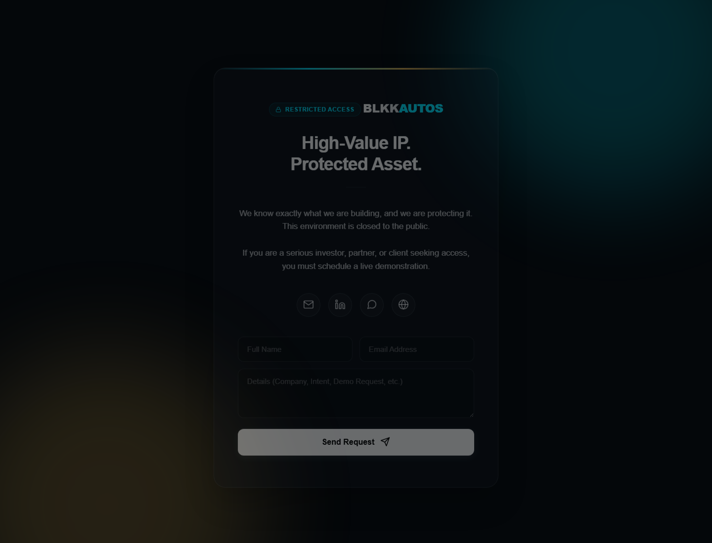
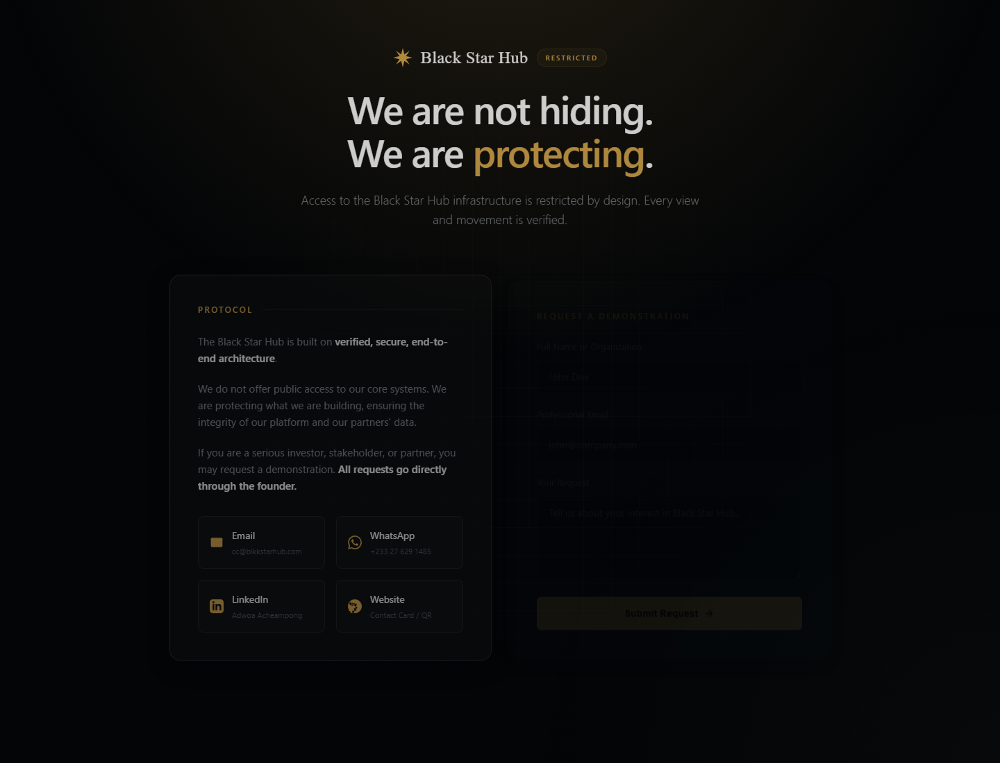

A concise briefing of software, analytics, ERP, artificial-intelligence and systems-design work, including live links, project status, architecture and technical stack.
| Project | Status | Primary domain | Public link |
|---|---|---|---|
| AGL OPS Command Center | LIVE | ERP / operational analytics | https://agl.software |
| Adinkra Intelligence Systems | ACTIVE / PROTOTYPE | Analytics / AI interface | https://blkkstarhub.com/adinkra-front |
| BLKK Autos | MVP / VALIDATION | Cross-platform commerce | https://blkkstarhub.com/autos-app |
| Blkk Star Hub | PLATFORM BUILD | Digital trade / multi-tenant OS | https://blkkstarhub.com |
| MIRACLE | LIVE | Gamified life operating system | https://miracleapp.site |
| Unified Family Educational ERP | ACTIVE DEVELOPMENT | AI learning / multi-tenant ERP | github.com/Adwoa-Acheampong/Family-Edu-System |
| Building AGL | CONCEPT | AR diagnostics | Concept / no public demo |
| Portfolio Website | LIVE | Personal portfolio / web | https://aacheampong.com |
Status discipline: Implemented technologies are stated as implemented. Where the wider Blkk architecture is still planned or being built, the stack is explicitly labelled designed/planned rather than presented as production-deployed.
A live, browser-based ERP and staff operations environment for Automobiles Ghana Ltd. It replaced fragmented paper and spreadsheet workflows with a searchable operating system for workshop activity, vehicle inventory, sales, expenses, staff attendance, HR records and management reporting.
| Application type | Web-based ERP / staff hub with operational dashboards |
| Core patterns | Role-based access, QR authentication, Kanban workflow management, searchable structured records |
| Data domains | Workshop job cards, vehicles, sales, inventory, expenses, attendance, HR and management KPIs |
| Analytics layer | Operational dashboards, performance reporting, data validation and decision-support views |
| Framework note | The exact production frontend/backend framework is not documented in the portfolio materials used for this briefing, so it is not overstated here. |
AGL OPS is the strongest evidence of systems work moving beyond prototype thinking into a real operational environment. It demonstrates requirements analysis, workflow redesign, data structuring, user adoption, executive reporting and business-impact measurement in one project.
The analytics and intelligence frontend for Blkk Star Hub. Adinkra is designed to sit above tenant ERP environments and convert authorised operational data into shared analytics, reporting and artificial-intelligence-assisted decision support. A tenant such as AGL can therefore be viewed from both its ERP operations side and its analytics side.
| Frontend | React 19, Vite |
| UI / styling | Tailwind CSS v4, Framer Motion |
| Routing | React Router |
| Data visualisation | Recharts |
| Operational tooling | QR workflows; spreadsheet parsing/import/export via SheetJS (XLSX) |
| Architecture | Multi-tenant analytics interface connected conceptually to Blkk Star Hub's shared backend and central artificial-intelligence layer |
A universal automotive-commerce application for web, iOS and Android and the first sector-specific validation wedge for Blkk Star Hub. It structures vehicle listings, dealer operations, buyer discovery and transaction workflows while providing a path for verified commercial activity to feed the wider data and analytics architecture.

| Application | React Native 0.86 |
| Cross-platform runtime | Expo 57 |
| Routing | Expo Router |
| Styling | Tailwind CSS |
| Motion / interaction | React Native Reanimated and gesture-based interaction |
| Deployment pattern | Single codebase targeting iOS, Android and web; static web bundle / micro-frontend integration within the broader Blkk Star Hub web experience |
A modular, API-first digital trade and business operating system designed to help African MSMEs move from fragmented, locally trusted commerce into structured, verifiable and increasingly financeable operations. The system combines sector-specific commerce frontends with a shared institutional spine for identity, operations, data, analytics, verification, payments, logistics and artificial intelligence.

| Web / mobile | React / Next.js web architecture; React Native / PWA patterns for mobile-first access |
| Primary data | PostgreSQL with JSONB for flexible cross-vertical catalogue and operating records |
| Search | Typesense or Elasticsearch for unified cross-vertical search |
| Performance | Redis for caching/session management; RabbitMQ for asynchronous events |
| Identity / API | JWT authentication, API Gateway and modular service boundaries |
| Distributed workflows | Microservice-oriented services with Saga-pattern orchestration for cross-service transactions |
| Payments / commerce | Designed payment orchestration, escrow-state logic, MoMo/card rails and split-payout workflows |
| Intelligence | Adinkra as the central analytics / artificial-intelligence layer consuming permissioned tenant and transaction data |
The broader architecture includes Autos, Merchant, Farmers and Estate verticals. These remain at different maturity levels and should be read as sector-specific expressions of one shared data, trust and operating-system architecture rather than as four unrelated applications.
A mobile-first life operating system built around faith, focus, stewardship and follow-through. MIRACLE turns personal disciplines such as prayer, study, goals and routines into a more engaging, game-like experience through progress, rewards and reflective interaction.
| Experience | Mobile-responsive web application |
| Interaction model | Gamification, progress tracking, rewards, routines and reflective content |
| Design direction | Personal dashboard and game-like UX intended to make consistent action more emotionally engaging |
| Framework note | The exact production framework, backend and database are not documented in the project materials available for this briefing, so no unsupported framework claim is made. |
A multi-tenant, AI-powered family learning ecosystem that gives different family members age-appropriate learning interfaces while using shared infrastructure underneath. The design combines a React/PWA dashboard, Google Workspace services and an AI orchestration layer for content generation, assignments, knowledge retrieval, grading and progress tracking.
| Frontend | React 19, Vite 6, TypeScript |
| UI | Tailwind CSS 4, Motion, Lucide React |
| State / data | TanStack React Query, React Router DOM 7 |
| Visualisation | Recharts 3 |
| AI SDK | Google GenAI |
| Edge / server | Cloudflare Workers / Wrangler, itty-router, Express, esbuild |
| Build / tooling | TypeScript, Bun lockfile / npm-compatible scripts, Vite, esbuild |
An augmented-reality mechanic diagnostic concept designed to bring structured vehicle fault data into the technician's field of view. The idea combines goggle-mounted camera input with fault-code information to guide diagnosis and repair in real time, while creating structured service evidence that can feed operational records.
| Interface | Augmented-reality / wearable display concept |
| Inputs | Goggle-mounted camera feed plus vehicle fault-code / diagnostic data |
| Intelligence | AI-assisted interpretation and guided diagnostic workflows (planned) |
| Systems integration | Designed to connect diagnostic activity with AGL operational / vehicle-service records |
https://aacheampong.com - Personal portfolio deployed through GitHub Pages with a custom domain. The deployed build is a React single-page web application.
https://github.com/Adwoa-Acheampong - Public profile and repositories, including the Unified Family Educational ERP source repository.
Formalising Africa's Informal Economy: Blkk Autos as the Entry Engine for an AI-Enabled Pan-African Trade Operating System (2026). Independent working paper and systems-research project examining the legal, commercial, trust, data-governance and technical architecture required for accountable digital trade infrastructure. Available on request.
Portfolio through-line: Across these projects, the recurring pattern is the conversion of fragmented human activity into structured systems: capturing better data, designing usable workflows, surfacing decision-ready information and progressively introducing artificial intelligence where it can reduce friction without replacing necessary human judgement.